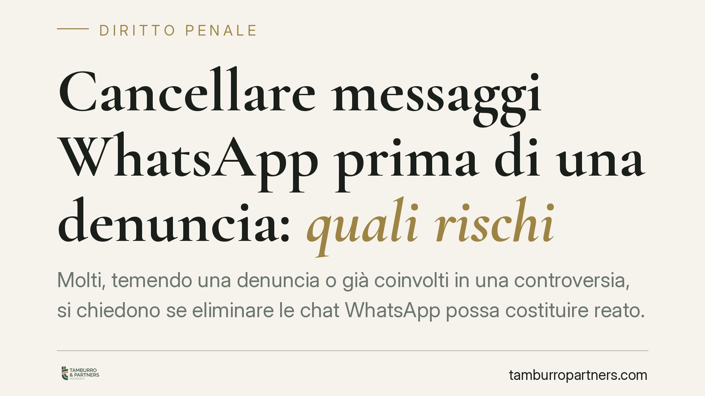

Cancellare messaggi WhatsApp prima di una denuncia: quali rischi
Molti, temendo una denuncia o già coinvolti in una controversia, si chiedono se eliminare le chat WhatsApp possa costituire reato. La risposta è più sfumata di quanto si pensi: raramente la cancellazione integra un illecito penale autonomo, ma sul piano probatorio può ritorcersi contro chi la compie. Vediamo perché, con i riferimenti normativi corretti.

Il punto di partenza: cancellare dati propri di regola non è reato
Partiamo da un principio spesso frainteso: eliminare messaggi che si trovano sul proprio dispositivo, e che riguardano conversazioni proprie, di regola non costituisce reato. Non esiste, nel nostro ordinamento, un obbligo generale penalmente sanzionato di conservare i propri dati in vista di un futuro procedimento.
Questo vale sia per l'imprenditore che ripulisce il telefono aziendale, sia per l'ex partner o l'amico che cancella una conversazione sgradita. La sola eliminazione, in assenza di elementi ulteriori, non fa scattare una responsabilità penale.
Le norme che vengono spesso citate (a torto)
Circola l'idea che la cancellazione integri il reato di frode processuale (art. 374 cod. pen.). È un inquadramento errato. La frode processuale punisce chi, durante un procedimento, altera artificiosamente lo stato dei luoghi, delle cose o delle persone per ingannare il giudice in sede di ispezione, perizia o esperimento giudiziale. La giurisprudenza è consolidata: cancellare chat prima o durante un'indagine non integra questa fattispecie, perché manca l'alterazione dei luoghi finalizzata a trarre in inganno in sede probatoria.
Anche il richiamo al danneggiamento di dati informatici (art. 635-bis cod. pen.) va maneggiato con cautela. Quella norma tutela dati, informazioni e programmi altrui: chi distrugge i propri dati sul proprio dispositivo, di norma, non commette questo reato.
Quando il quadro cambia davvero
Il rischio penale diventa concreto in scenari diversi e più specifici:
- Dati altrui: se si cancellano o alterano dati contenuti in dispositivi o account di altri, l'art. 635-bis cod. pen. torna pienamente applicabile.
- Favoreggiamento reale (art. 379 cod. pen.): chi aiuta un'altra persona ad assicurarsi il profitto di un reato, anche facendo sparire tracce, può risponderne. È un reato che presuppone la condotta a beneficio di altri, non l'autotutela del presunto responsabile.
- Occultamento o soppressione di documenti (in particolare art. 490 cod. pen. per gli atti veri): rilevante quando la chat ha natura di documento destinato a servire come prova a favore di terzi.
La distinzione tra reato proprio e favoreggiamento in favore di terzi è decisiva: non si può appiattire tutto su un'unica fattispecie.
Il vero rischio è sul piano probatorio
Qui si gioca la partita concreta. Anche quando la cancellazione non è reato, può produrre effetti negativi rilevanti in giudizio.
Primo: i dati sono spesso recuperabili. Backup su cloud, copie sul dispositivo dell'interlocutore, sincronizzazioni e accertamenti tecnici forensi possono riportare alla luce messaggi che si credevano eliminati. La cancellazione, in questi casi, non serve allo scopo e resta agli atti.
Secondo: una cancellazione selettiva e mirata, effettuata in prossimità di una denuncia o dopo aver percepito il rischio di un procedimento, può essere valorizzata dal giudice come indizio contra se, ossia come elemento che incide sulla credibilità di chi l'ha compiuta. È diverso dalla normale pulizia periodica del dispositivo, che rientra in una gestione ordinaria e neutra.
Implicazioni pratiche
Per chi teme un procedimento, il messaggio è chiaro: distruggere le prove raramente conviene e spesso peggiora la posizione. Il confine tra manutenzione ordinaria e occultamento mirato è sottile, e nel dubbio l'iniziativa individuale può rivelarsi controproducente, sia contro chi la subisce sia contro il proprio avversario.
Cosa fare in concreto
- Non cancellare conversazioni rilevanti se avete percepito il rischio di una denuncia o di una causa: sospendete qualsiasi eliminazione selettiva.
- Conservate i messaggi effettuando copie complete ed estrazioni datate, senza modificare i contenuti.
- Distinguete la pulizia ordinaria del telefono dalla rimozione mirata di specifiche chat: la seconda espone a letture negative.
- Verificate dove si trovano i dati (backup cloud, dispositivi collegati): ciò che avete cancellato può comunque riemergere.
- Chiedete consiglio a un legale prima di agire, per valutare come acquisire e proteggere il materiale nel rispetto delle regole processuali.
Il principio operativo è semplice: si conserva e si chiede consiglio, non si distrugge.
Ogni condominio ha una storia a sé.
Se gestisci un'amministrazione e vuoi un confronto su una specifica questione condominiale, scrivi allo studio. Ti rispondiamo entro un giorno lavorativo.